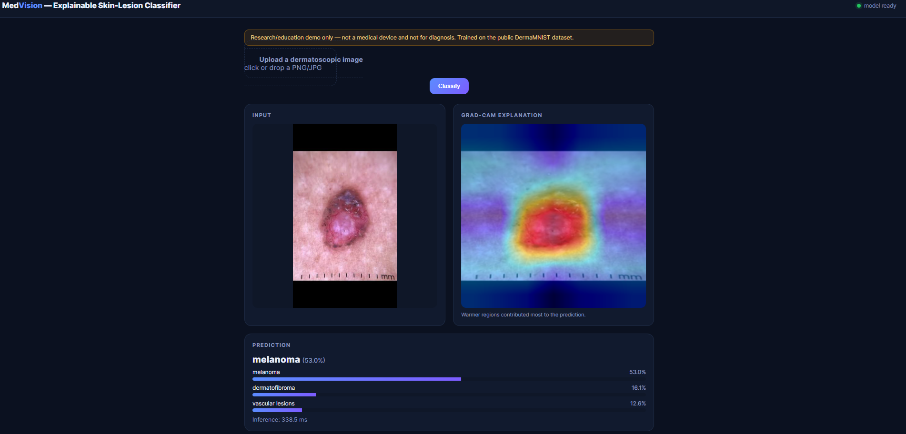
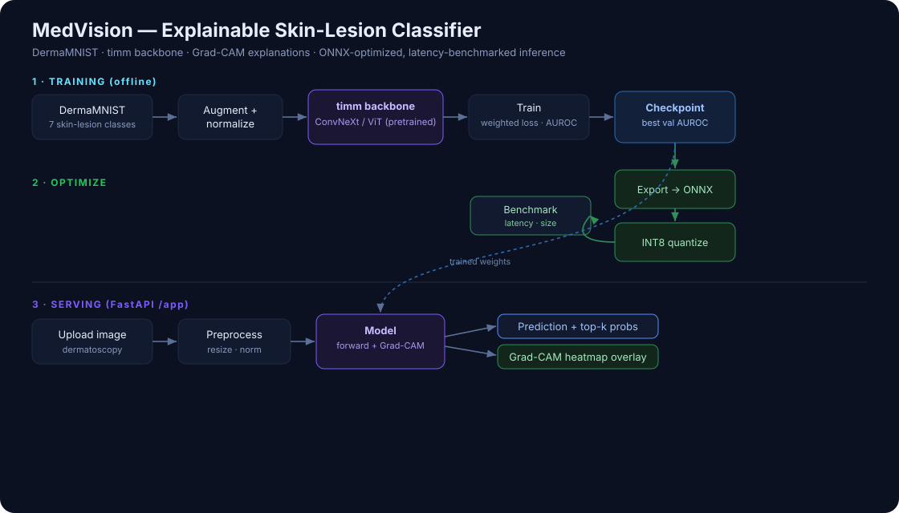

Computer Vision · Medical Imaging · Explainable AI · MLOps
MedVision: Explainable Skin-Lesion Classifier
A deployed, explainable medical-image classifier: it predicts one of 7 skin-lesion types, shows why with Grad-CAM heatmaps, and serves predictions through an ONNX-optimized, latency-benchmarked FastAPI service.
Live demo
Upload a dermatoscopic image and the model returns a prediction, class probabilities, and a Grad-CAM heatmap localizing the pixels that drove the decision:

Architecture

Results
ConvNeXt-Tiny fine-tuned on DermaMNIST (7 classes, 224px) — on par with published MedMNIST baselines.
Inference optimization
Exported the trained model to ONNX and INT8, and benchmarked latency and size on CPU:
| Engine | Latency | Size | vs PyTorch |
|---|---|---|---|
| PyTorch fp32 | 113.5 ms | 106.2 MB | 1.0× |
| ONNX fp32 | 33.4 ms | 106.2 MB | 3.4× faster |
| ONNX INT8 | — | 26.9 MB | 3.9× smaller |
ONNX export alone cut CPU latency 3.4× (113 → 33 ms); INT8 quantization shrank the model 3.9× (106 → 27 MB).
Explainability & clinical error analysis
Every prediction ships with a Grad-CAM heatmap highlighting the pixels that drove the decision. Reading the confusion matrix like a clinician, the model's hardest boundary is the clinically critical melanoma ↔ benign-nevus distinction — 57 of 223 melanomas were predicted as benign moles (the dangerous false-negative direction). This is the real challenge in dermatology, and the training pipeline exposes a class-weighting control to trade accuracy for higher melanoma recall when that clinical tradeoff is desired.
Engineering
Modular pipeline (data, model, training, explainability, export, serving), class-imbalance-aware training (tempered weighted loss, label smoothing, cosine schedule) tracking accuracy / macro-F1 / macro-AUROC with best-checkpoint selection, a branch-per-feature git workflow, unit-tested metrics and inference logic, GitHub Actions CI, and Docker Compose deployment with a container healthcheck.
Tech stack
Python, PyTorch, timm (ConvNeXt/ViT), MedMNIST, ONNX + ONNX Runtime, OpenCV, FastAPI, Docker, GitHub Actions, Weights & Biases.